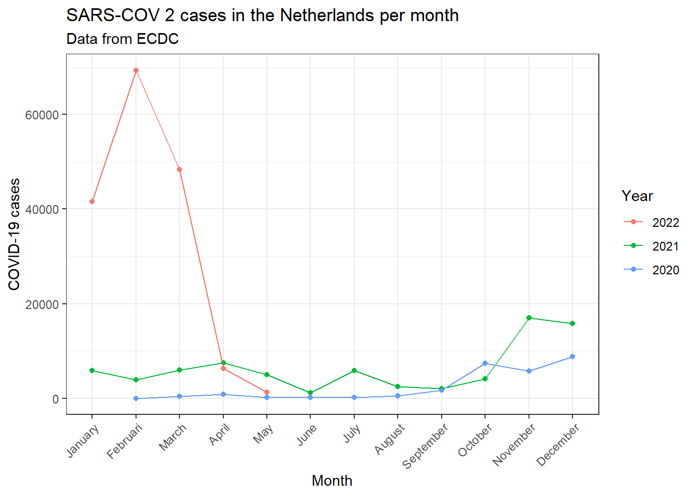
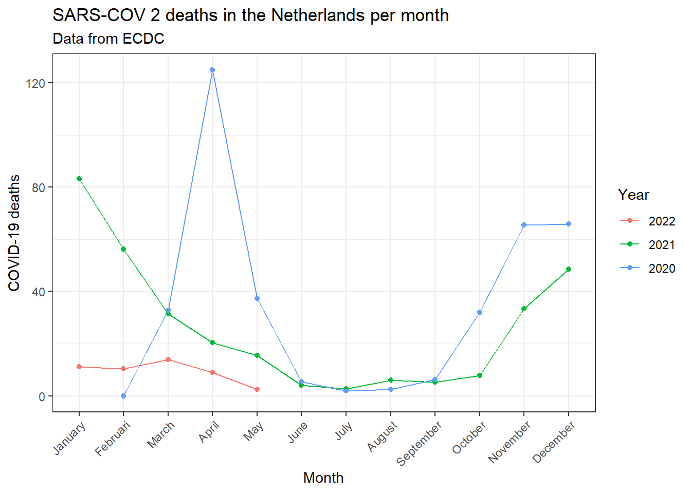

Front page Data visualisation Directory structure SQL R-package Zotero Reproductibility CV The future
To prove my skills in the producing parametized .Rmd’s, I’ve used an online COVID-19 dataset and parametized the visualisation of this data file.
library(here)
library(tidyverse)
library(ggplot2)############################################################### Reading data
covid_data<-read.csv("./data.raw/data.csv")
covid_data_vis<-covid_data
############################################################### Mangling data
covid_years<-covid_data$year %>% unique()
covid_data_vis$year<-factor(as.character(covid_data$year), levels = as.character(covid_years))
months<-c("January", "Februari", "March", "April", "May", "June", "July", "August", "September", "October", "November", "December")
months_dataframe<-data.frame(MONTH=months,
month=seq(1:12))
months_dataframe$MONTH<-factor(months_dataframe$MONTH, levels = months)
covid_data_vis<-left_join(covid_data_vis, months_dataframe, by = "month")
############################################################### Creating visualisation: Cases per month
covid_data_vis %>% filter(countriesAndTerritories=="Netherlands") %>% group_by(MONTH, year) %>% summarise(
cases=mean(cases, na.rm=TRUE)
) %>% ggplot(aes(x=MONTH, y=cases))+
geom_point(aes(color=year))+
geom_line(aes(group=year, color=year))+
theme_bw()+
theme(axis.text.x = element_text(angle=45, hjust=1))+
labs(
title="SARS-COV 2 cases in the Netherlands per month",
subtitle = "Data from ECDC",
x="Month",
y="COVID-19 cases",
color="Year"
)## `summarise()` has grouped output by 'MONTH'. You can override using the `.groups` argument.
############################################################# Creating visualisation: Deaths per month
covid_data_vis %>% filter(countriesAndTerritories=="Netherlands") %>% group_by(MONTH, year) %>% summarise(
deaths=mean(deaths, na.rm=TRUE)
) %>% ggplot(aes(x=MONTH, y=deaths))+
geom_point(aes(color=year))+
geom_line(aes(group=year, color=year))+
theme_bw()+
theme(axis.text.x = element_text(angle=45, hjust=1))+
labs(
title="SARS-COV 2 deaths in the Netherlands per month",
subtitle = "Data from ECDC",
x="Month",
y="COVID-19 deaths",
color="Year"
)## `summarise()` has grouped output by 'MONTH'. You can override using the `.groups` argument.